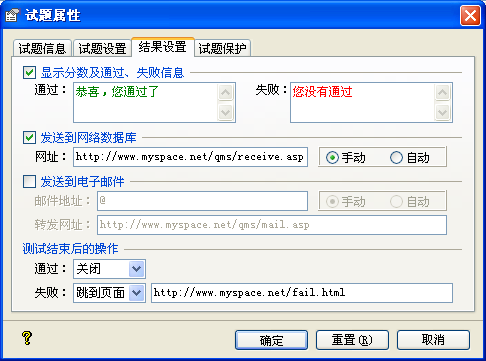
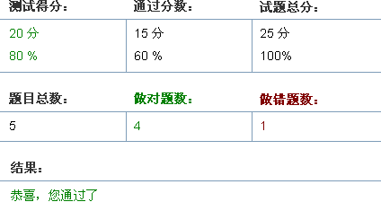

| 属性设置 - 结果设置 |
|
结果设置页面如下图所示：  Ø 显示分数及通过、失败信息 此选项决定测试者做完试题后，是否显示结果页面。若此选项选中，则在测试结果页面会显示所得分数、通过分数，并将它们的百分比与通过率对比，以决定是显示通过信息还是失败信息。若此选项未选取，则结果页面会显示一条信息，此信息在播放器的字符串设置中的[若设定不显示分数，则显示：]。  Ø 发送到网络数据库 此处设置测试者做完试题后数据是否发送到网上的数据接收系统，具体操作请参考数据收集部分。 当此选项勾选，并且发送模式为[手动]，且在播放器设置中勾选[数据发送]及其上级，则会在做完题后，工具栏区显示一个数据发送的按钮，测试者点击此按钮可发送测试结果；若是发送模式选为自动，则不会显示数据发送按钮，测试者做完题后，测试结果会自动发送到指定的数据接收页面。 当此选项没有选定，则不会发送数据，做完题后也不会显示数据发送按钮。 Ø 发送到电子邮件 此选项以决定测试者做完试题后，其测试结果是否经由转发网址发送到指定的邮件地址中，具体操作请参考邮件接收部分。 其[手动]及[自动]选项，功能与[发送数据到网络数据库]类似，请参考对应内容。 需要注意的是，此两种功能，在试题预览模式下，是不起用的，它只在正式发布的试题中使用。 Ø 测试结束后的操作 通过：其有两种操作，关闭或者跳到指定页面。测试测试者做完试题，其所得分大于设定通过率时，[完成]按钮执行对应操作。 失败：与通过一样有两个操作，测试者最后所得分若小于所设定的通过率，则点击[完成]按钮时，以决定是关闭 做题页面还是跳到指定页面。 |